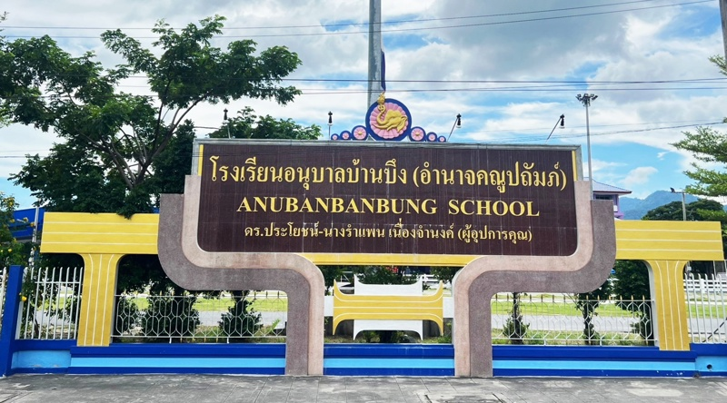
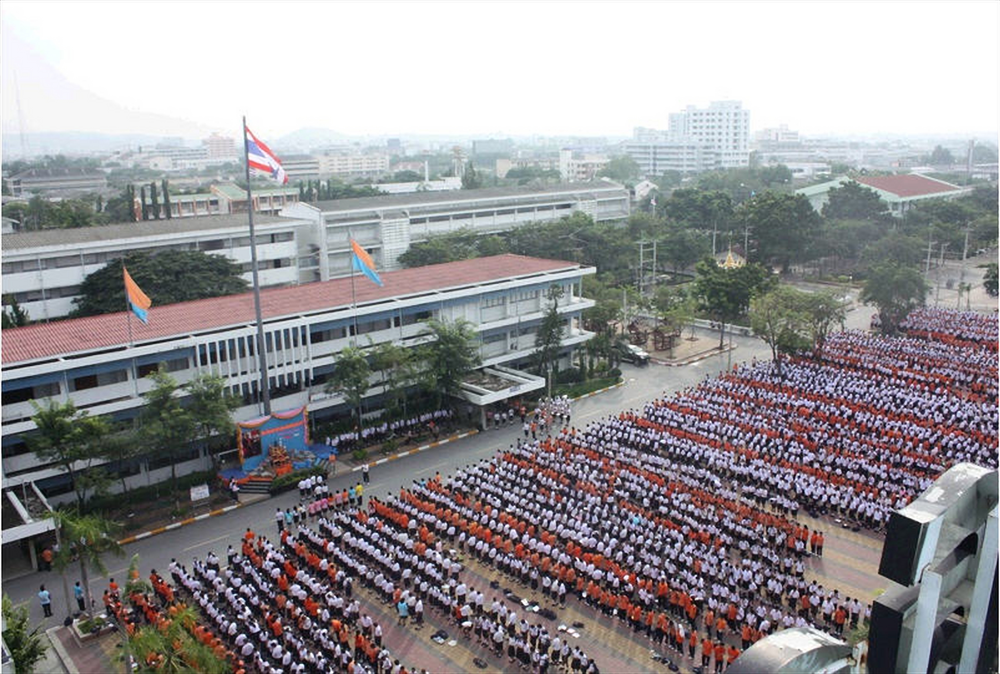

Educational Milestones
Anubanbanbung School
Degree: Elementary education
Field of Study:English Program
Duration: 2016 - 2022
Chonradsadornumrung School
Degree: High School Student
Field of Study: English Program
Duration: 2022 - Present
Degree: Elementary education
Field of Study:English Program
Duration: 2016 - 2022
Degree: High School Student
Field of Study: English Program
Duration: 2022 - Present